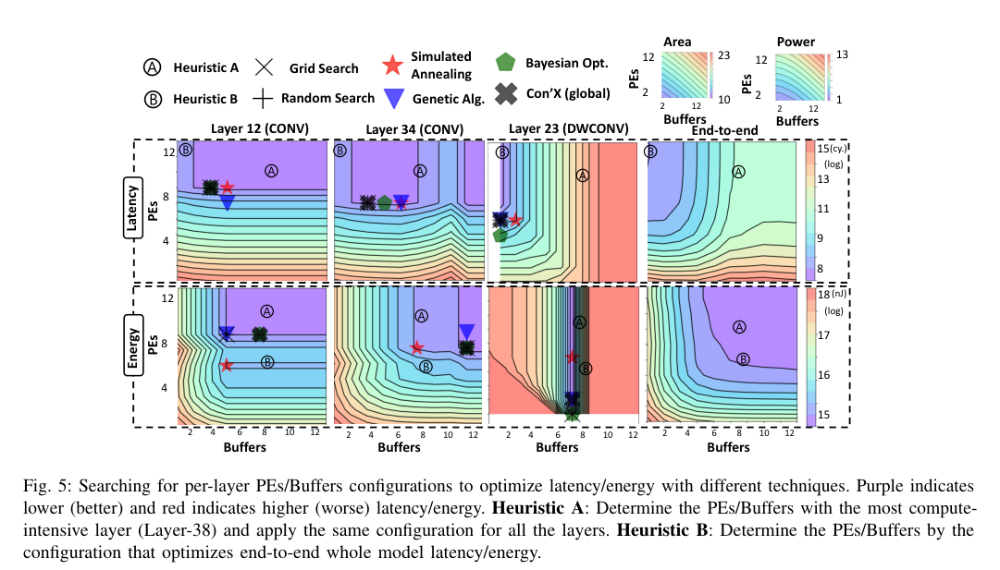

本报告由大模型自动生成，可能存在理解、归纳或数据转述错误；请以原论文为准。 ConfuciuX: Autonomous Hardware Resource Assignment for DNN Accelerators using Reinforcement LearningSheng-Chun Kao, Geonhwa Jeong, Tushar Krishna · Proceedings of the ... annual International Symposium on Microarchitecture/Proceedings of the annual International Symposium on Microarchitecture · 2020 · 原文 · PDF 报告模型：gemini-3.1-pro-preview / high 本文详细介绍了由佐治亚理工学院发表的关于深度神经网络（DNN）加速器硬件资源自主分配的研究《ConfuciuX: Autonomous Hardware Resource Assignment for DNN Accelerators using Reinforcement Learning》。本文将按逻辑顺序深入解析该研究的背景、核心方法、实验设计及最终结论。 背景与问题定义理解系统全貌与核心概念（背景补充与原文整合） 要理解本文，首先需要建立空间架构 DNN 加速器的基础全貌。一个典型的加速器芯片由计算和存储层级组成。最底层是处理单元（Processing Element, 简称 PE），它是包含乘加器（MAC）的物理计算核心。每个 PE 内部或附近配有局部的小容量 SRAM 存储器，称为本地缓存（Local Buffer，本文统称为 Buffer 或 L1 Buffer），用于暂存当前的权重、激活值和部分和。芯片上还有一个全局共享的大容量缓存（L2 Buffer），用于从片外 DRAM 预取数据。各个 L1 Buffer 之间通过**片上网络（Network-on-Chip, NoC）**连接。 由于片上缓存容量远小于完整的 DNN 模型数据，必须将巨大的输入矩阵和权重矩阵切分成小块，这一小块数据被称为 Tile（分块）。Tile 的大小受到 L1 和 L2 Buffer 物理容量的严格限制。 将数据从全局存储调度到局部 PE 进行计算的策略被称为数据流（Dataflow）。它决定了计算的执行顺序、在 PE 阵列上的空间并行展开方式以及数据的 Tile 切分策略。例如，NVDLA 风格的数据流会固定权重，在输入和输出通道维度上并行；而 Eyeriss 风格则固定滤波器行。不同的数据流能利用不同类型的“数据复用”（减少访存带来的功耗和延迟）。 本文探讨的核心问题
在确定了数据流之后，加速器设计的下一步是分配具体的硬件资源。本文定义一个**设计点（Design-Point）**为一对由开发者在设计时或编译时指定的自由变量组合： 当给定一种数据流时，即使受限于同一块芯片的面积或功耗上限，将资源多分配给 PE（提高算力）还是多分配给 Buffer（减少访存并提高单次 Tile 内的数据复用率），会导致截然不同的端到端延迟和能耗。对于一个具有数十层的现代 DNN，可用的设计点空间组合呈组合爆炸式增长（例如对于具有 128 个 PE 和 128 个 Buffer 的加速器运行 52 层 MobileNet-V2 时选择空间高达 ）。传统上，架构师完全依赖耗时的网格搜索（Grid Search）或穷举来寻找合适的设计点，这在庞大的空间中是不可行的。 针对这一困境，本文提出了 ConfuciuX，一种利用机器学习自动化探索优化硬件资源分配的框架，致力于在满足平台面积和功耗约束的前提下，最小化加速器运行 DNN 的总延迟或总能耗。 架构侧与 EDA 侧的跨层协同建模本文并不涉及传统物理层面的 EDA 综合或布局布线，而是聚焦于架构设计早期的设计空间探索（DSE）。在这个阶段，为了让机器学习算法能够快速迭代，架构的性能指标不能依赖极其缓慢的 RTL 仿真。 作者引入了一个名为 MAESTRO 的开源微架构分析评估模型作为环境反馈接口。在这里，架构到评估（类 EDA 功能）的信息传递是这样的：
部署场景（作者的设计选择）在寻找资源分配策略前，作者定义了两种针对不同平台的 DNN 模型部署场景，约束了问题的求解形式：
ConfuciuX 方法详解为了解决庞大且不规则的设计空间问题，ConfuciuX 采用两阶段优化：第一阶段使用**强化学习（RL）进行全局粗粒度搜索，第二阶段使用遗传算法（GA）**进行局部细粒度微调。 1. 全局搜索：基于 REINFORCE 的强化学习作者将 DSE 建模为一个马尔可夫决策过程（MDP）。把 DNN 的各个网络层看作时间步（Time-step ），整个模型的分配过程看作一个回合（Epoch / Episode）。 状态（State / Observation）： 在第 层，环境提供给 RL 智能体的观察向量定义如下： 其中，所有变量均由作者设定并缩放至 以稳定神经网络训练。具体含义如下（所有变量的单位原文均未说明）：
动作空间（Action Space）： 由于硬件性能与资源配置往往呈非线性关系（例如从 1 个 PE 增加到 2 个性能翻倍，但从 64 增加到 65 几乎没变化），作者人为地将动作空间离散化为对数增长的 12 个等级（如表 1 所示，PE 可选 1, 2, 4...128；Buffer 随乘加树规模匹配，如 19, 29...129，单位原文未说明）。在每个时间步 ，智能体输出两个离散动作：当前层的 PE 等级和 Buffer 等级。 策略网络设计（软件设计选择）： 算法选用了一个带有 128 隐藏层大小的 LSTM（长短期记忆网络）作为策略网络。为什么使用 RNN 结构？因为本文有一个硬性约束（芯片总面积或总功耗）。未来对剩余预算的分配必须依赖于过去已经消耗的预算。RNN 内部的循环连接可以记住整条流水线上的预算消耗累积历史。 奖励函数（Reward Function）与惩罚机制： 这是 RL 设计中最关键的一环。目标是最小化总体延迟或能耗，同时满足硬件约束。对于单步性能，作者定义了奖励公式： 这里出现的符号定义如下（所有变量的单位原文均未说明）：
算法选择之争（为什么不用 Actor-Critic？）： 当前最先进的离散 RL 算法（如 PPO, A2C）通常包含一个生成动作的 Actor 和一个评估当前状态价值的 Critic。但作者在经过实验后，决定抛弃前沿算法，退回到基础的基于策略梯度的 REINFORCE 算法（仅有 Actor）。 原因在于硬件规律的残酷性： 底层硬件的性能随 PE 和 Buffer 变化的曲面（如图 5）是极其离散、不规则且存在大量平台期的（例如资源过度配置时，增加 PE 完全不减少延迟）。Critic 网络极难回归逼近这种无明显平滑梯度的价值函数，错误的 Critic 估值反而会误导 Actor 策略。REINFORCE 直接利用 MAESTRO 返回的最终真实性能更新策略，避开了价值函数拟合的陷阱。  2. 局部微调：遗传算法（GA）当强化学习收敛到 12 级粗粒度空间中的一个较优解后，该解被编码为包含 个基因（ 为 DNN 的层数，单位原文未说明）的初始基因组（Genome），进入 GA 阶段寻找细粒度解（fine-grained solution）。 针对传统 GA 容易产生破坏约束的无效后代的问题，作者设计了定制化的变异与交叉规则：
实验评估与结果评估设置： 作者测试了 MobileNet-V2, ResNet-50 等 CNN 模型，以及 Transformer 等基于 GEMM 的模型。平台约束设置为云端（宽松面积/功耗）、IoT 设备（严格约束）、IoTx（极严苛约束）。 实验结果支持的结论：
全文总结主线脉络： 本文最初遭遇的难题是：针对 DNN 加速器，即使在架构级确立了数据流，由于各层计算特性迥异，分配底层算力（PE）与片上存储（Buffer）的组合空间依然庞大到无法用传统方法探索（问题提出）。为了突破这一限制，作者求助于强化学习，并借助数学分析级代价模型 MAESTRO 代替传统物理级 EDA 实现快速迭代。在这个跨层建模中，作者发现传统的复杂 RL 算法在离散的硬件评估曲面面前失效，从而后退并定制了最符合该物理规律的 Actor-only 循环神经网络（REINFORCE + RNN），不仅学到了面积/功耗红线，还大幅提升了搜索效率（核心设计与原因）。最终，辅以不破坏总约束的定制遗传算法，ConfuciuX 框架成功地在各类网络和设备平台上找到了远优于传统启发式规则的微架构资源分配方案（问题解决）。 关键局限性： 尽管结果振奋人心，但也必须指出该方法的固有局限：由于评估环境依赖于 MAESTRO 解析模型，任何 MAESTRO 未能完美捕捉的物理约束（如极其复杂的 NoC 局部拥塞、物理版图走线带来的时序降级或热散发瓶颈）都不会反映在 RL 的奖励信号中。这意味着 ConfuciuX 找到的“优化解（optimized HW resource assignment strategy）”，在下推至实际 RTL 物理综合时，可能仍需要根据深层 EDA 软件的反馈进行微调。这一结论不应被过度推广到宣称“彻底消除了后端物理验证的需求”。 |